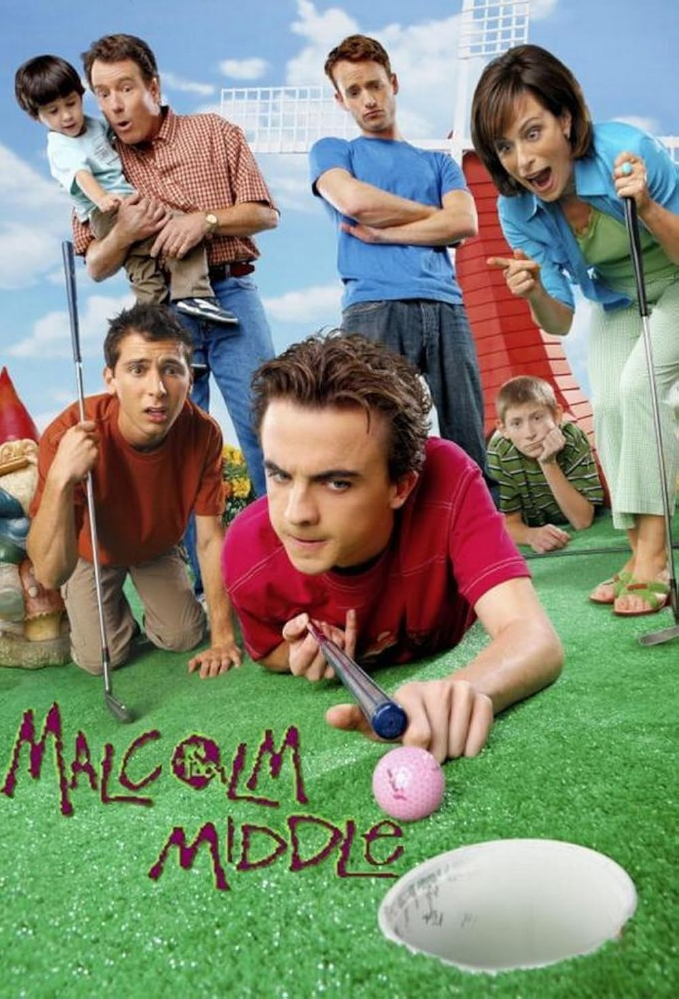

Music and TV series can be excellent tools to improve language learning, as they combine motivation with natural practice. On one hand, TV shows expose us to real language, helping us learn vocabulary, colloquial expressions, and pronunciation. Additionally, the visual context helps us understand and guess meanings even if we don’t catch every single word. On the other hand, music, just like TV shows, helps us learn vocabulary and improve our pronunciation
My 3 Favorite Teachers
Friends
Life conversations
The big bang theory
Nerdy vocabulary

Malcolm in the middle
Fast, real-life conversations
It's important to listen to artists with clear lyrics and practice active listening, preferably with subtitles. Using this method consistently and combining it with formal language study (like grammar) creates complete, high-quality learning.